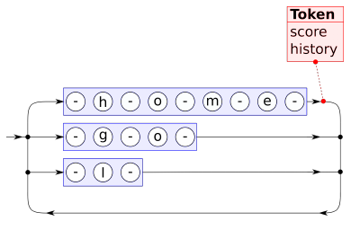

Publications
Handwritten text recognition in historical documents
Thesis with the following contributions:
|
Word Beam Search: A Connectionist Temporal Classification Decoding Algorithm
Paper presented at the 16th International Conference on Frontiers in Handwriting Recognition, 2018, Niagara Falls, USA. Properties of proposed algorithm:
|
Comparison of Connectionist Temporal Classification Decoding AlgorithmsComparison between beam search decoding and token passing. The paper was written as part of a course at university and was not published at a conference. Nevertheless, I'm presenting it here because it offers some practical tips on using those two algorithms. |
Harald Scheidl